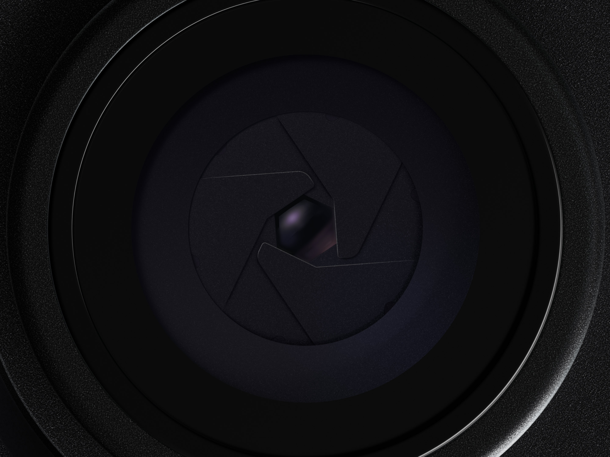

iPhone 18 Pro
Pro，全方位。
Get the highlights.

从镜头特写进入摄影章节。细节先出现，参数随后解释。
Design
Our finest
unibody of work.


Cameras
细节，
逐步展开。
滚动驱动缩放与文案交接。镜头细节保持在同一舞台中，视线随章节移动。
让画面
证明产品。
特写、尺度变化与留白，让复杂功能变成可以感知的故事。
页面机制学习
本地复现：真实素材、全宽产品舞台、亮点轮播、悬浮章节导航、细节选择器、滚动缩放与透明度交接。镜头曲线为本地近似；完整原站 3D 渲染、交易与全部章节未移植。
逐项对照 ↗素材来源 ↗返回拆解 ↗